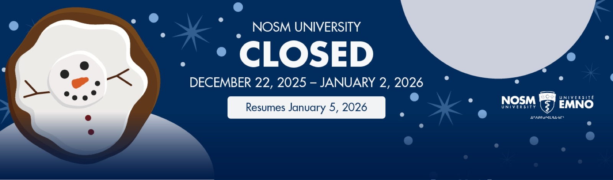
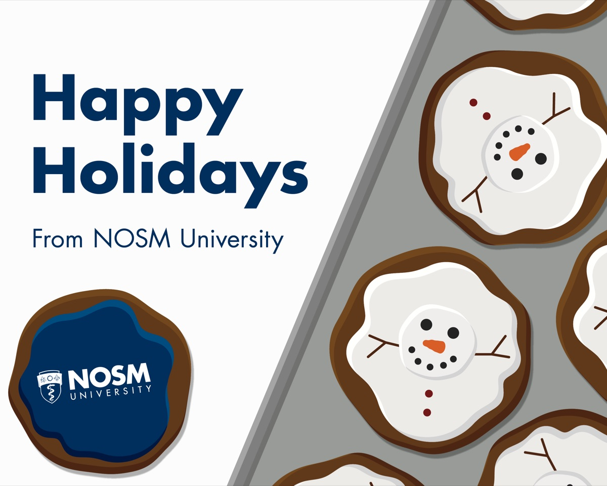
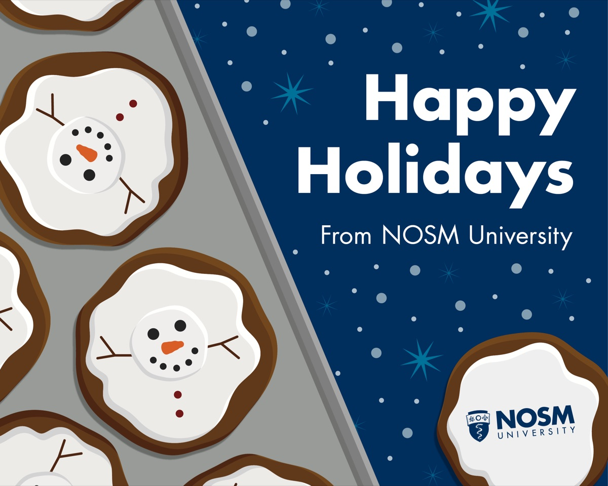
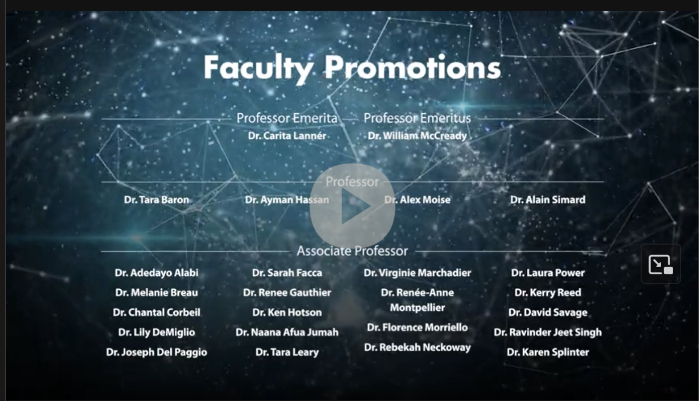
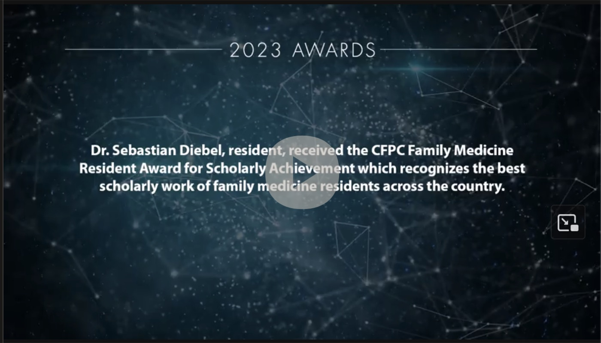

Digital Campaigns
The brand at work: motion, video, social, and screens in hospital lobbies.

Campaign work is where a brand proves it can move. A holiday campaign built from a cookie, a donor celebration video, conference ads for hospital screens, and the social assets in between.
It started with a cookie
The new Dean's wife decorates cookies. I vectorized one of her snowmen, built the university's holiday cards around it, and stayed late on the last Friday before break to animate it taking bites out of itself. Worth it.



Thanks, on screen
A celebration video for university donors: cut in Premiere, titles and graphics in After Effects, on brand from the first frame.


Ads where health workers actually look
Conference advertising sized for the places it runs: hospital lobby screens at 1920×1080 and the nosm.ca homepage banner.
TL;DR
- The holiday campaign ran across nosm.ca and university social channels.
- The donor video screened for the university's donor community.
- Conference ads ran on hospital screens across Northern Ontario.
Need a brand that moves? Let's talk.
Get in touch